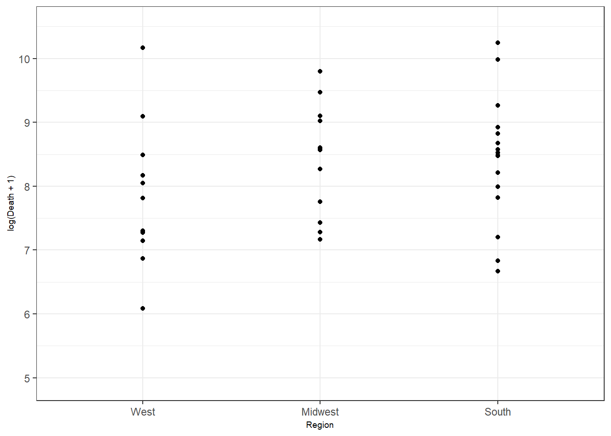
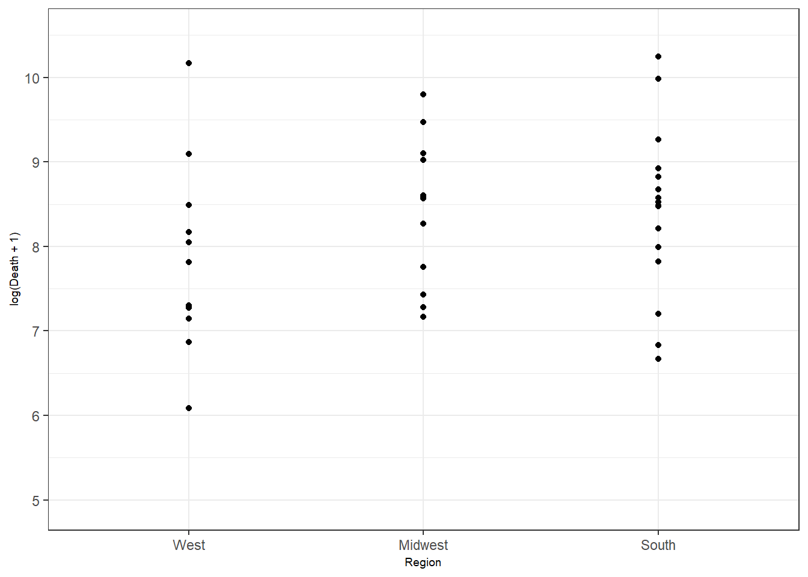
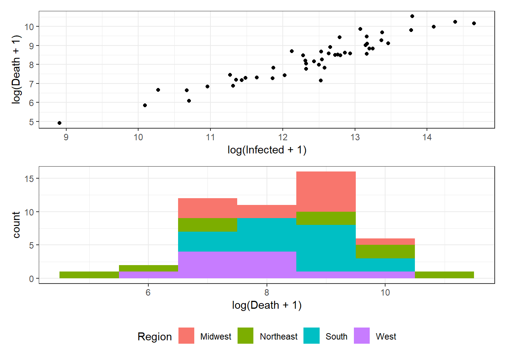
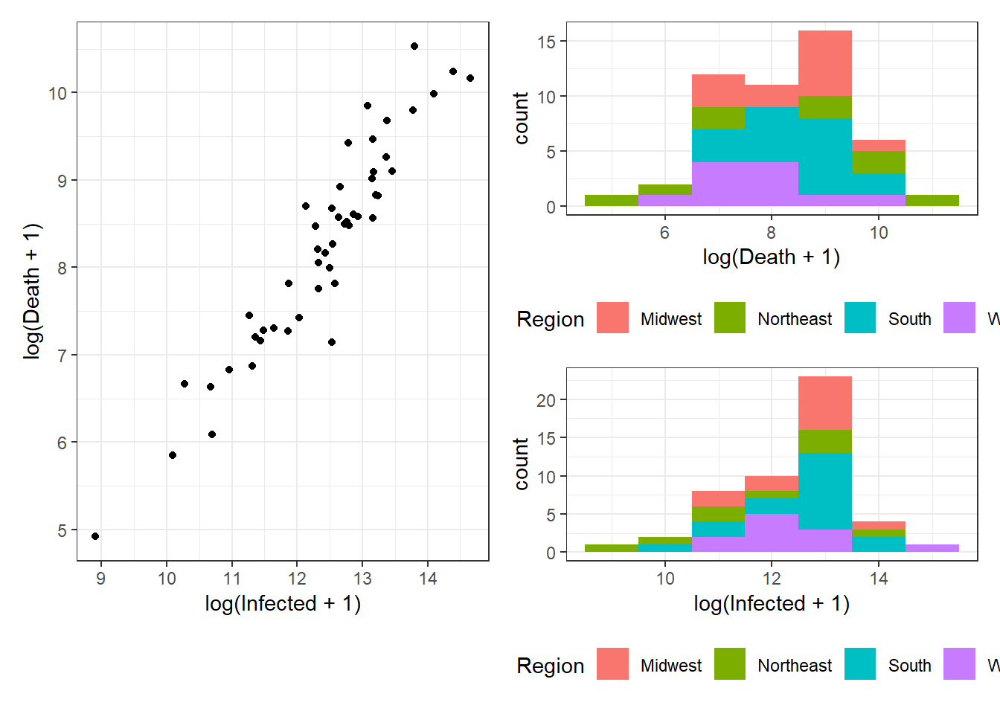
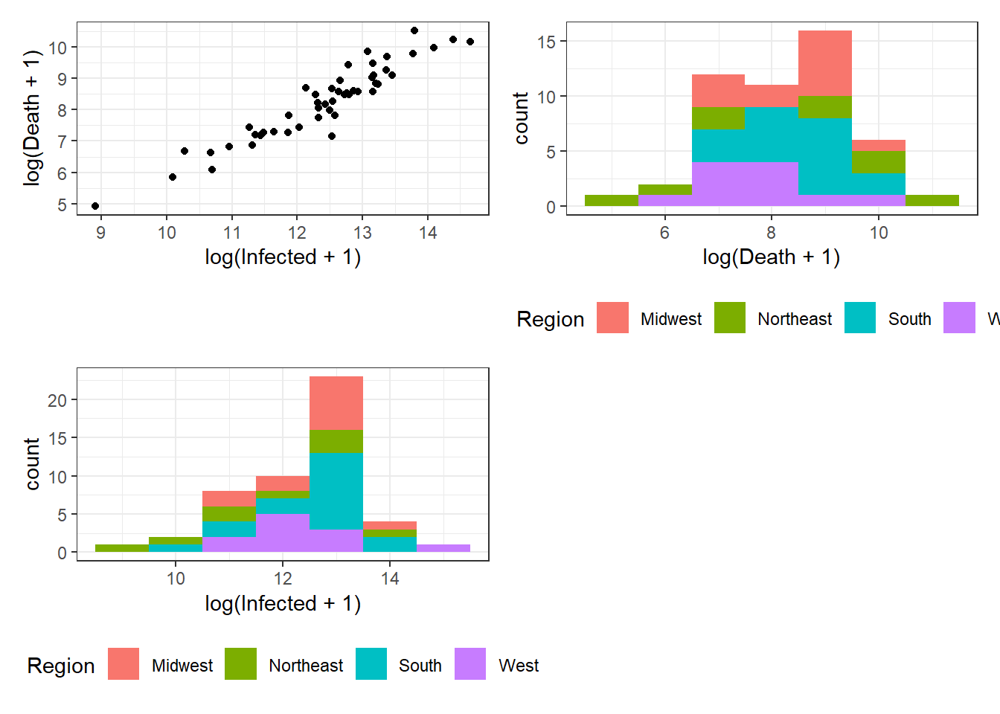
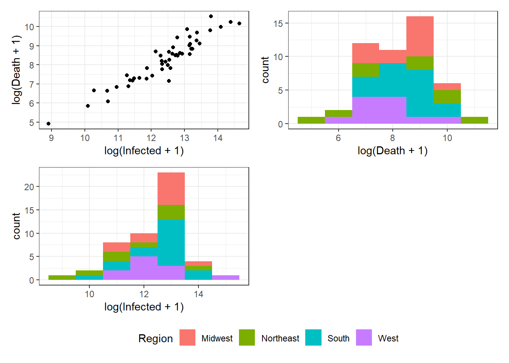
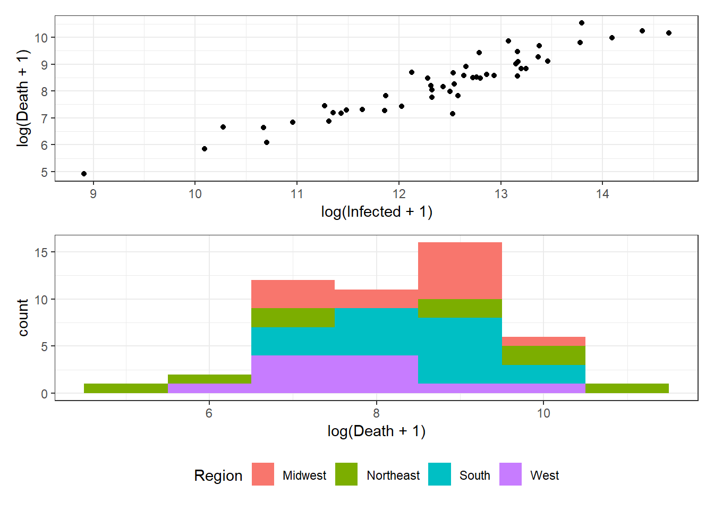
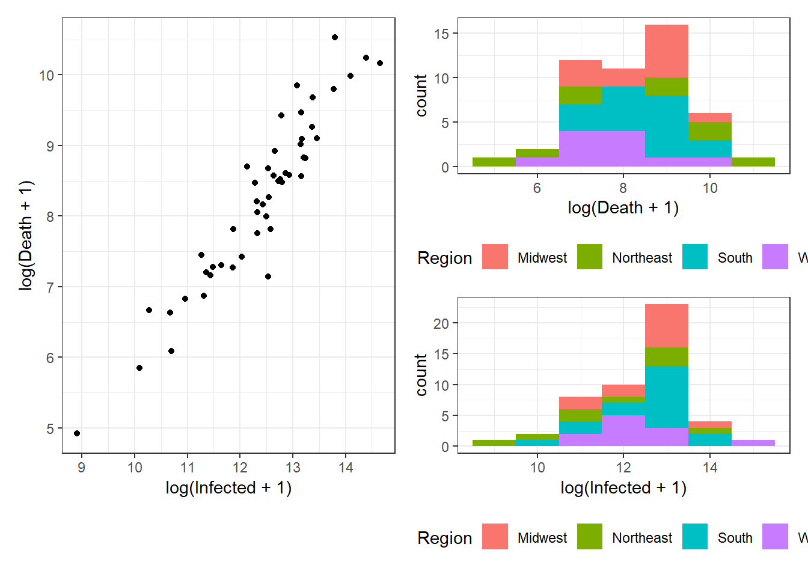
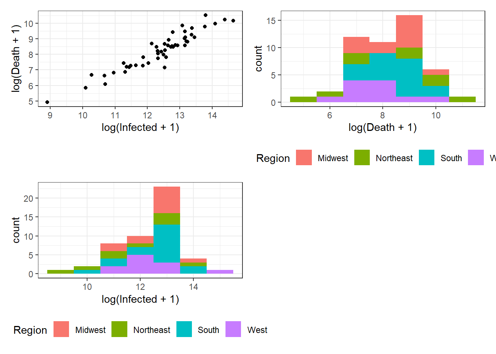
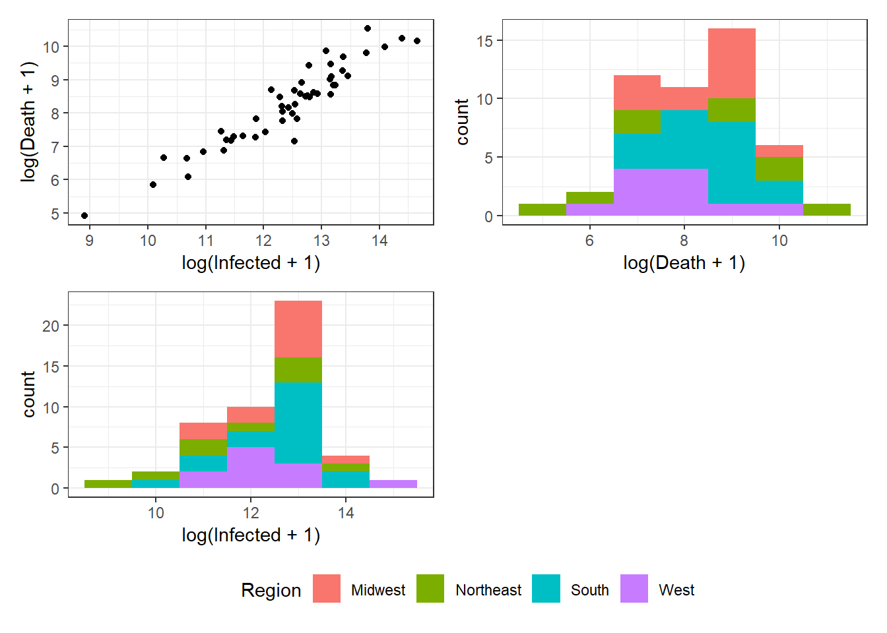

Chapter 3 Data Visualization with “ggplot2”
 

Figure 3.1: Bottom right: customized axis range for discrete features.
Figure 3.2: Bottom: A scatterplot with points colored by pop.

Figure 3.3: Top left: A scatterplot with customized color palette for discrete scale. Top right: A scatterplot with customized color palette for continuous scale. Middle left: A scatterplot with customized point size. Middle right: A scatterplot with customized point size and color. Bottom left: A scatterplot with customized point size using the Method 1. Bottom right: A scatterplot with customized point size using the Method 2.
Figure 3.4: A state-labeled dot plot with an average number of daily new cases per 100,000 people from May 24 to May 31, 2020.
Figure 3.5: Histogram examples using geom_histogram().

Figure 3.6: Top left: A bar plot example with geom_bar(). Top right: Bar plots of number of states in each region. Middle left: Bar plots of number of states in each region with legend at right. Middle right: Bar plots of number of states in each region with legend at bottom. Bottom left: Bar plots of number of states in each region using guide_legend(ncol = 2, byrow = TRUE). Bottom right: Bar plots of number of states in each region using guide_legend(reverse = TRUE).

Figure 3.7: Top left: Points plot. Top right: Jittering plot. Bottom left: Boxplot plot. Bottom right: Violin plot.
Figure 3.8: Top left: loess smoother example with span = 0.5. Top right: loess smoother example with span = 1.0. Bottom left: lm smoother example with a simple linear regression. Bottom right: lm smoother example with a quadratic regression.
Figure 3.9: Various time series plots (see the book webpage for the colored version). Top left: basic plot. Top right: with added predictions. Middle left: with ribbons and second line. Middle right: with adjusted time range and format. Bottom left: annotated plot with shades and reference lines for each epiweek.

Figure 3.10: Various US maps (see the book webpage for the colored version). Top left: basic map with dotted state boundaries. Top right: with colored state areas. Middle left: with colored state areas according to infected per thousand population. Middle right: with colored state areas and limits on the values. Bottom left: with colored state areas and county boundaries.
Figure 3.11: Left: A density plot of ILI for each age group. Right: A conditional density plot of log(ILI + 1) over age group for binwidth = 1.

Figure 3.12: A scatterplot with marginal boxplots.
Figure 3.13: Facetting examples using the functions facet_wrap() and facet_grid().
 

Figure 3.14: Bottom right: Grouped arrangements of three plots (p1+p2+p3), using plot_layout(), whose duplicate legends are combined through guides = "collect".